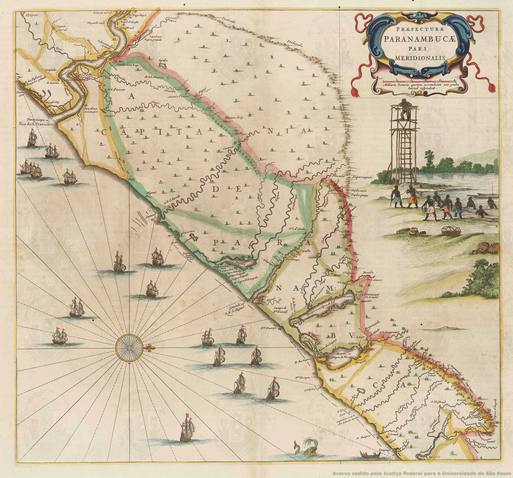

O Quilombo dos Palmares não era uma única aldeia, mas sim uma rede de povoados que se estendia por uma região vasta e estratégica.
Atualmente, o território que compreendia o quilombo faz parte de dois estados brasileiros:
Alagoas: Onde ficava o centro administrativo e político, especificamente na Serra da Barriga, no município de União dos Palmares. Este era o local do famoso Mocambo do Macaco.
Pernambuco: O quilombo se estendia por áreas que hoje pertencem ao sul do estado de Pernambuco, ocupando partes de municípios como Garanhuns e Bom Conselho.
Divisão Territorial da Época. É importante lembrar que, durante o século XVII (auge de Palmares), a divisão administrativa era diferente:
Todo o território ocupado por Palmares pertencia à antiga Capitania de Pernambuco.
O estado de Alagoas só passou a existir como uma província separada de Pernambuco em 1817, muito tempo depois da queda do quilombo (que ocorreu em 1694).
A área total ocupada pelos quilombolas era de aproximadamente 27.000 km², o que equivale quase ao tamanho da Bélgica ou do estado de Alagoas inteiro.
Por estar situado na zona de mata e montanha entre esses dois estados, o relevo acidentado e as matas densas serviam como uma barreira natural contra as expedições coloniais.
